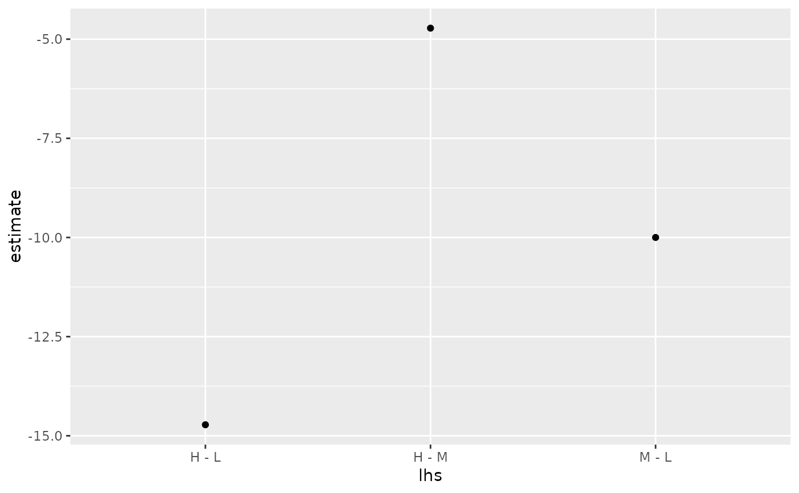
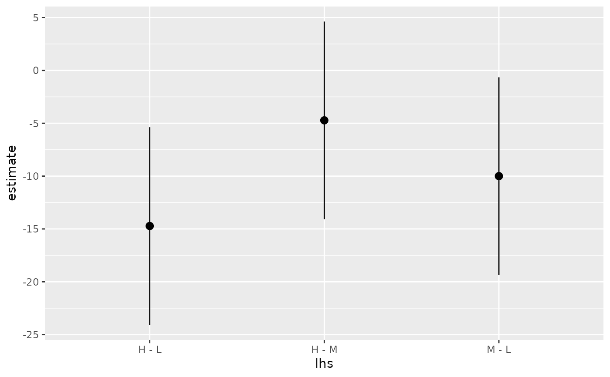
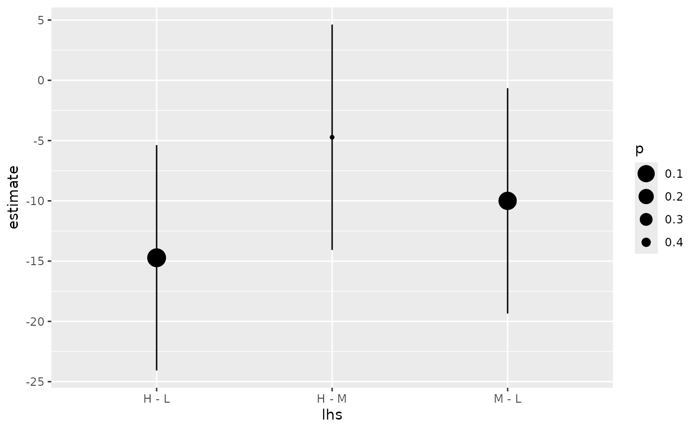

Tidy summarizes information about the components of a model. A model component might be a single term in a regression, a single hypothesis, a cluster, or a class. Exactly what tidy considers to be a model component varies across models but is usually self-evident. If a model has several distinct types of components, you will need to specify which components to return.
Usage
# S3 method for class 'glht'
tidy(x, conf.int = FALSE, conf.level = 0.95, ...)Arguments
- x
A
glhtobject returned bymultcomp::glht().- conf.int
Logical indicating whether or not to include a confidence interval in the tidied output. Defaults to
FALSE.- conf.level
The confidence level to use for the confidence interval if
conf.int = TRUE. Must be strictly greater than 0 and less than 1. Defaults to 0.95, which corresponds to a 95 percent confidence interval.- ...
Additional arguments passed to
summary()andtidy.summary.glht().
See also
Other multcomp tidiers:
tidy.cld(),
tidy.confint.glht(),
tidy.summary.glht()
Value
A tibble::tibble() with columns:
- contrast
Levels being compared.
- estimate
The estimated value of the regression term.
- null.value
Value to which the estimate is compared.
Examples
# load libraries for models and data
library(multcomp)
library(ggplot2)
amod <- aov(breaks ~ wool + tension, data = warpbreaks)
wht <- glht(amod, linfct = mcp(tension = "Tukey"))
tidy(wht)
#> # A tibble: 3 × 7
#> term contrast null.value estimate std.error statistic adj.p.value
#> <chr> <chr> <dbl> <dbl> <dbl> <dbl> <dbl>
#> 1 tension M - L 0 -10.0 3.87 -2.58 0.0336
#> 2 tension H - L 0 -14.7 3.87 -3.80 0.00111
#> 3 tension H - M 0 -4.72 3.87 -1.22 0.447
ggplot(wht, aes(lhs, estimate)) +
geom_point()

CI <- confint(wht)
tidy(CI)
#> # A tibble: 3 × 5
#> term contrast estimate conf.low conf.high
#> <chr> <chr> <dbl> <dbl> <dbl>
#> 1 tension M - L -10.0 -19.4 -0.648
#> 2 tension H - L -14.7 -24.1 -5.37
#> 3 tension H - M -4.72 -14.1 4.63
ggplot(CI, aes(lhs, estimate, ymin = lwr, ymax = upr)) +
geom_pointrange()

tidy(summary(wht))
#> # A tibble: 3 × 7
#> term contrast null.value estimate std.error statistic adj.p.value
#> <chr> <chr> <dbl> <dbl> <dbl> <dbl> <dbl>
#> 1 tension M - L 0 -10.0 3.87 -2.58 0.0336
#> 2 tension H - L 0 -14.7 3.87 -3.80 0.00108
#> 3 tension H - M 0 -4.72 3.87 -1.22 0.447
ggplot(mapping = aes(lhs, estimate)) +
geom_linerange(aes(ymin = lwr, ymax = upr), data = CI) +
geom_point(aes(size = p), data = summary(wht)) +
scale_size(trans = "reverse")

cld <- cld(wht)
tidy(cld)
#> # A tibble: 3 × 2
#> tension letters
#> <chr> <chr>
#> 1 L a
#> 2 M b
#> 3 H b